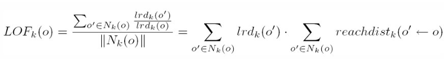
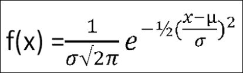
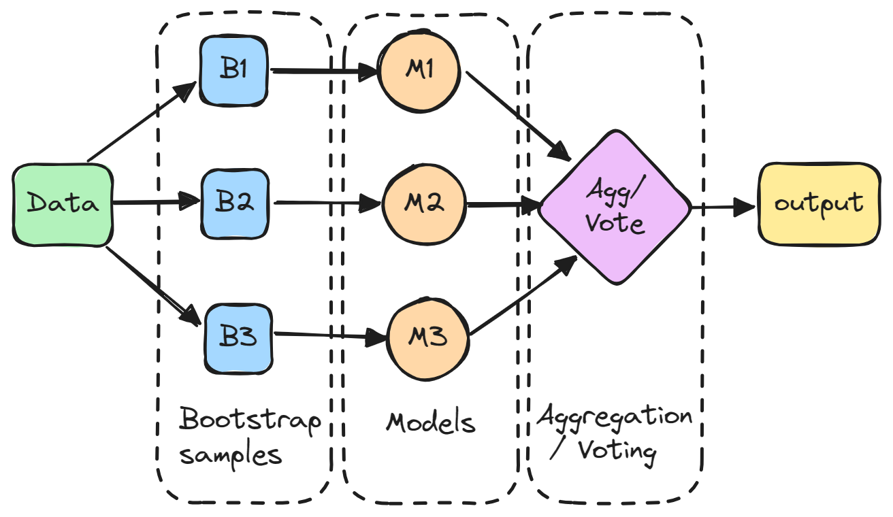

CLASSIFICATION FOR PREDICTION ON BREAST CANCER COIMBRA#
Pemeriksaan kanker payudara adalah strategi penting untuk mendeteksi dini dan memastikan probabilitas kesembuhan yang lebih baik dalam pengobatan. Model prediktif yang kuat berdasarkan data yang dapat dikumpulkan dalam konsultasi rutin dan analisis darah dicari untuk memberikan kontribusi penting dengan menawarkan lebih banyak alat skrining.
Tujuan#
Penelitian ini bertujuan untuk mengevaluasi bagaimana model berbasis data yang dapat dikumpulkan dalam analisis rutin darah - terutama Glukosa, Insulin, HOMA, Leptin, Adiponektin, Resistin, MCP-1, Usia, dan Indeks Massa Tubuh (BMI) - dapat digunakan untuk memprediksi keberadaan kanker payudara.
import pandas as pd
import numpy as np
import joblib
import seaborn as sns
from matplotlib import pyplot as plt
from sklearn.neighbors import LocalOutlierFactor
from sklearn.model_selection import train_test_split
from sklearn.naive_bayes import GaussianNB
from sklearn.neighbors import KNeighborsClassifier
from sklearn.ensemble import StackingClassifier #
DATA UNDERSTANDING#
Data Understanding atau memahami data adalah sebuah tahapan di dalam metodologi sains data dan pengembangan AI yang bertujuan untuk mendapatkan pemahaman awal mengenai data yang dibutuhkan untuk memecahkan permasalahan yang diberikan. Pada kasus kali ini kita akan memahami Dataset Breast Cancer Coimbra.
MENGUMPULKAN DATA#
Mencari Data#
Tahapan pertama pada mengumpulkan data adalah dengan mencari dataset yang akan kita gunakan, sesuai penjelasan di atas kita akan menggunakan Dataset Breast Cancer Coimbra yang bersumber dari:
https://archive.ics.uci.edu/dataset/451/breast+cancer+coimbra
Menarik data#
df = pd.read_excel('dataR2.xlsx')
df
---------------------------------------------------------------------------
ModuleNotFoundError Traceback (most recent call last)
File ~/.local/lib/python3.10/site-packages/pandas/compat/_optional.py:135, in import_optional_dependency(name, extra, errors, min_version)
134 try:
--> 135 module = importlib.import_module(name)
136 except ImportError:
File /usr/local/python/3.10.13/lib/python3.10/importlib/__init__.py:126, in import_module(name, package)
125 level += 1
--> 126 return _bootstrap._gcd_import(name[level:], package, level)
File <frozen importlib._bootstrap>:1050, in _gcd_import(name, package, level)
File <frozen importlib._bootstrap>:1027, in _find_and_load(name, import_)
File <frozen importlib._bootstrap>:1004, in _find_and_load_unlocked(name, import_)
ModuleNotFoundError: No module named 'openpyxl'
During handling of the above exception, another exception occurred:
ImportError Traceback (most recent call last)
Cell In[2], line 1
----> 1 df = pd.read_excel('dataR2.xlsx')
3 df
File ~/.local/lib/python3.10/site-packages/pandas/io/excel/_base.py:495, in read_excel(io, sheet_name, header, names, index_col, usecols, dtype, engine, converters, true_values, false_values, skiprows, nrows, na_values, keep_default_na, na_filter, verbose, parse_dates, date_parser, date_format, thousands, decimal, comment, skipfooter, storage_options, dtype_backend, engine_kwargs)
493 if not isinstance(io, ExcelFile):
494 should_close = True
--> 495 io = ExcelFile(
496 io,
497 storage_options=storage_options,
498 engine=engine,
499 engine_kwargs=engine_kwargs,
500 )
501 elif engine and engine != io.engine:
502 raise ValueError(
503 "Engine should not be specified when passing "
504 "an ExcelFile - ExcelFile already has the engine set"
505 )
File ~/.local/lib/python3.10/site-packages/pandas/io/excel/_base.py:1567, in ExcelFile.__init__(self, path_or_buffer, engine, storage_options, engine_kwargs)
1564 self.engine = engine
1565 self.storage_options = storage_options
-> 1567 self._reader = self._engines[engine](
1568 self._io,
1569 storage_options=storage_options,
1570 engine_kwargs=engine_kwargs,
1571 )
File ~/.local/lib/python3.10/site-packages/pandas/io/excel/_openpyxl.py:552, in OpenpyxlReader.__init__(self, filepath_or_buffer, storage_options, engine_kwargs)
534 @doc(storage_options=_shared_docs["storage_options"])
535 def __init__(
536 self,
(...)
539 engine_kwargs: dict | None = None,
540 ) -> None:
541 """
542 Reader using openpyxl engine.
543
(...)
550 Arbitrary keyword arguments passed to excel engine.
551 """
--> 552 import_optional_dependency("openpyxl")
553 super().__init__(
554 filepath_or_buffer,
555 storage_options=storage_options,
556 engine_kwargs=engine_kwargs,
557 )
File ~/.local/lib/python3.10/site-packages/pandas/compat/_optional.py:138, in import_optional_dependency(name, extra, errors, min_version)
136 except ImportError:
137 if errors == "raise":
--> 138 raise ImportError(msg)
139 return None
141 # Handle submodules: if we have submodule, grab parent module from sys.modules
ImportError: Missing optional dependency 'openpyxl'. Use pip or conda to install openpyxl.
MEMAHAMI DATA#
Deskripsi Data#
dataset Breast Cancer Coimbra adalah kumpulan data yang digunakan dalam penelitian untuk membangun model prediktif terkait kanker payudara. Dataset ini terdiri dari informasi biokimia yang dikumpulkan dari sampel darah pasien, yang mencakup beberapa variabel penting seperti Glukosa, Insulin, HOMA (Homeostasis Model Assessment), Leptin, Adiponektin, Resistin, MCP-1 (Monocyte Chemoattractant Protein-1), serta usia dan Indeks Massa Tubuh (BMI).
Pada dataset ini terdapat 116 data.
Penjelasan Fitur#
Age (years), numerik: Usia pasien dalam tahun.
BMI (kg/m2), numerik: Body Mass Index (BMI) adalah ukuran yang menggambarkan proporsi berat badan seseorang terhadap tinggi badannya.
Glucose (mg/dL), numerik: Glukosa adalah tingkat gula dalam darah pasien, diukur dalam miligram per desiliter (mg/dL).
Insulin (µU/mL), numerik: Insulin adalah hormon yang mengatur metabolisme glukosa dalam tubuh.
HOMA, numerik: Homeostasis Model Assessment (HOMA) adalah indeks yang digunakan untuk menilai resistensi insulin dan fungsi sel beta dalam pankreas.
Leptin (ng/mL), numerik: Leptin adalah hormon yang diproduksi oleh jaringan lemak dan berperan dalam mengatur nafsu makan dan metabolisme energi
Adiponectin (µg/mL), numerik: Adiponektin adalah hormon yang diproduksi oleh jaringan lemak yang berfungsi untuk mengatur metabolisme glukosa dan lipid.
Resistin (ng/mL), numerik: Resistin adalah protein yang diproduksi oleh sel lemak dan berperan dalam peradangan dan resistensi insulin.
MCP-1 (pg/dL), numerik: MCP-1 (Monocyte Chemoattractant Protein-1) adalah sitokin yang berperan dalam mengatur migrasi dan aktivasi sel monosit, yang merupakan bagian dari sistem kekebalan tubuh.
Labels(Classification), numerik: 1=Healthy controls 2=Patients
PLOTTING DATA#
Data Distribution#
Age
df['Age'].plot(kind='hist', bins=20, title='Age')
plt.gca().spines[['top', 'right',]].set_visible(False)
{kind=link}
BMI
df['BMI'].plot(kind='hist', bins=20, title='BMI')
plt.gca().spines[['top', 'right',]].set_visible(False)
{kind=link}
Glucose
df['Glucose'].plot(kind='hist', bins=20, title='Glucose')
plt.gca().spines[['top', 'right',]].set_visible(False)
{kind=link}
Insulin
df['Insulin'].plot(kind='hist', bins=20, title='Insulin')
plt.gca().spines[['top', 'right',]].set_visible(False)
{kind=link}
HOMA
df['HOMA'].plot(kind='hist', bins=20, title='HOMA')
plt.gca().spines[['top', 'right',]].set_visible(False)
{kind=link}
Leptin
df['Leptin'].plot(kind='hist', bins=20, title='Leptin')
plt.gca().spines[['top', 'right',]].set_visible(False)
{kind=link}
Adiponectin
df['Adiponectin'].plot(kind='hist', bins=20, title='Adiponectin')
plt.gca().spines[['top', 'right',]].set_visible(False)
{kind=link}
Resistin
df['Resistin'].plot(kind='hist', bins=20, title='Resistin')
plt.gca().spines[['top', 'right',]].set_visible(False)
{kind=link}
MCP.1
{kind=link}
2D Distribution#
# Asumsi df af_outliersalah DataFrame Anda dengan kolom-kolom yang relevan
# Mengonversi kolom yang dipilih menjadi array numpy
X = df[['Age', 'BMI', 'Glucose', 'Insulin', 'HOMA', 'Leptin', 'Adiponectin', 'Resistin' , 'MCP.1']].values
# Menerapkan Local Outlier Factor
lof = LocalOutlierFactor(n_neighbors=3)
y_pred = lof.fit_predict(X)
# Menambahkan prediksi outlier ke DataFrame
df['Outlier'] = y_pred
# Menampilkan plot pasangan (pair plot)
pair_plot = sns.pairplot(df, hue='Outlier', palette={1: 'blue', -1: 'red'}, diag_kind='auto')
# Menambahkan judul
pair_plot.fig.suptitle('Visualisasi Outlier Menggunakan Local Outlier Factor (LOF)', y=1.02)
# Menampilkan plot
plt.show()
{kind=link}
EKSPLORASI DATA#
df[['Age', 'BMI', 'Glucose', 'Insulin', 'HOMA', 'Leptin', 'Adiponectin', 'Resistin' , 'MCP.1']].describe()
| Age | BMI | Glucose | Insulin | HOMA | Leptin | Adiponectin | Resistin | MCP.1 | |
|---|---|---|---|---|---|---|---|---|---|
| count | 116.000000 | 116.000000 | 116.000000 | 116.000000 | 116.000000 | 116.000000 | 116.000000 | 116.000000 | 116.000000 |
| mean | 57.301724 | 27.582111 | 97.793103 | 10.012086 | 2.694988 | 26.615080 | 10.180874 | 14.725966 | 534.647000 |
| std | 16.112766 | 5.020136 | 22.525162 | 10.067768 | 3.642043 | 19.183294 | 6.843341 | 12.390646 | 345.912663 |
| min | 24.000000 | 18.370000 | 60.000000 | 2.432000 | 0.467409 | 4.311000 | 1.656020 | 3.210000 | 45.843000 |
| 25% | 45.000000 | 22.973205 | 85.750000 | 4.359250 | 0.917966 | 12.313675 | 5.474283 | 6.881763 | 269.978250 |
| 50% | 56.000000 | 27.662416 | 92.000000 | 5.924500 | 1.380939 | 20.271000 | 8.352692 | 10.827740 | 471.322500 |
| 75% | 71.000000 | 31.241442 | 102.000000 | 11.189250 | 2.857787 | 37.378300 | 11.815970 | 17.755207 | 700.085000 |
| max | 89.000000 | 38.578759 | 201.000000 | 58.460000 | 25.050342 | 90.280000 | 38.040000 | 82.100000 | 1698.440000 |
KUALITAS DATA#
Missing Value#
Missing value adalah data yang hilang atau tidak tersedia dalam dataset.
df.isnull().sum()
Age 0
BMI 0
Glucose 0
Insulin 0
HOMA 0
Leptin 0
Adiponectin 0
Resistin 0
MCP.1 0
Classification 0
Outlier 0
dtype: int64
Outlier Data#
Outlier adalah nilai yang jauh berbeda dari nilai lainnya dalam kumpulan data. Nilai ini muncul sebagai pengecualian dalam pola data yang ada.
Nilai yang ada di outlier bisa jauh lebih tinggi maupun lebih rendah dibandingkan dengan nilai-nilai lain dalam dataset. Outlier bisa terjadi karena berbagai alasan, termasuk kesalahan pengukuran, kejadian langka, atau karena faktor lain yang tidak terduga.
Mendeteksi outlier merupakan langkah penting dalam analisis data karena outlier memiliki dampak signifikan terhadap hasil analisis dan berpotensi menghasilkan kesimpulan yang tidak akurat.
Berikut beberapa alasan lain di balik pentingnya mendeteksi outlier:
Menghindari distorsi analisis
Memahami data dengan tepat
Memastikan analisis valid
Mendeteksi jika ada kesalahan atau kecurangan
Oleh karena itu, nantinya akan kita cek apakah ada data yang aneh atau tidak dengan menggunakan LOF (Local Outlier Factor)
DATA PRE-PROCESSING#
Normalisasi Data#
normalisasi data menggunakan MinMaxScaler
from sklearn.preprocessing import MinMaxScaler
# Pisahkan fitur numerik
numeric_features = ['Age', 'BMI', 'Glucose', 'Insulin', 'HOMA', 'Leptin', 'Adiponectin', 'Resistin', 'MCP.1']
df_numeric = df[numeric_features]
# Inisialisasi MinMaxScaler
scaler = MinMaxScaler()
# Normalisasi data numerik
df_normalized = pd.DataFrame(scaler.fit_transform(df_numeric), columns=df_numeric.columns)
# Gabungkan kembali dengan kolom Classification
df_normalized['Classification'] = df['Classification']
df=pd.concat([df_normalized,])
# Tampilkan hasil normalisasi
print(df.head())
Age BMI Glucose Insulin HOMA Leptin Adiponectin \
0 0.369231 0.253850 0.070922 0.004908 0.000000 0.052299 0.221152
1 0.907692 0.114826 0.226950 0.012190 0.009742 0.052726 0.103707
2 0.892308 0.235278 0.219858 0.036874 0.022058 0.158526 0.571021
3 0.676923 0.148328 0.120567 0.014171 0.005911 0.064811 0.151538
4 0.953846 0.135640 0.226950 0.019936 0.013748 0.027782 0.086940
Resistin MCP.1 Classification
0 0.060665 0.224659 1
1 0.010826 0.255926 1
2 0.076906 0.307912 1
3 0.121131 0.533934 1
4 0.093375 0.440565 1
Local Outlier Factor#
Konsep Local Outlier Factor
Local Outlier Factor (LOF) adalah metode yang digunakan dalam analisis data untuk mengidentifikasi observasi yang dianggap sebagai outlier berdasarkan konteks lokal atau lingkungan mereka. LOF memberikan skor untuk setiap data berdasarkan seberapa “aneh” atau tidak biasa data tersebut dibandingkan dengan tetangga-tetangganya.
Berikut adalah konsep utama dari LOF:
Local Reachability Density (LRD): Local Reachability Density (LRD) adalah ukuran kepadatan lokal dari sebuah data. Ini menunjukkan seberapa dekat sebuah data dengan tetangganya dalam ruang fitur. LRD didefinisikan sebagai kebalikan dari jarak rata-rata antara sebuah data dan tetangganya dalam k-NN. Semakin kecil jarak rata-rata, semakin besar LRD.
Local Outlier Factor (LOF): Local Outlier Factor (LOF) adalah rasio dari LRD sebuah data terhadap LRD dari tetangga-tetangganya. Ini mengukur seberapa jauh sebuah data dari tetangganya dalam hal kepadatan. Data dengan LOF yang tinggi cenderung menjadi outlier karena mereka memiliki kepadatan yang jauh lebih rendah dibandingkan dengan tetangga-tetangganya.
Proses utama dalam menghitung LOF melibatkan langkah-langkah berikut:
Hitung jarak antara semua pasang data dalam ruang fitur dengan Euclidean Distance.
Temukan k tetangga terdekat untuk setiap data.
Menghitung Reachability Distance (RD)
Hitung LRD untuk setiap data dengan menghitung kebalikan dari jarak rata-rata antara data dan tetangganya.

Hitung LOF untuk setiap data dengan membandingkan LRD dari data dengan LRD dari tetangga-tetangganya.
Check Outlier#
lof = LocalOutlierFactor(n_neighbors=5, p=2)
lof_predict = lof.fit_predict(df.drop(['Classification'], axis=1))
outlier = df.index[lof_predict == -1]
print("Index predicted table:", df.index[lof_predict == -1])
Index predicted table: Index([6, 37, 74, 78, 83, 87, 88, 98], dtype='int64')
df.loc[outlier]
| Age | BMI | Glucose | Insulin | HOMA | Leptin | Adiponectin | Resistin | MCP.1 | Classification | |
|---|---|---|---|---|---|---|---|---|---|---|
| 6 | 1.000000 | 0.214264 | 0.120567 | 0.040301 | 0.017222 | 0.030860 | 0.108120 | 0.123287 | 0.732326 | 1 |
| 37 | 0.692308 | 0.827498 | 0.290780 | 0.057364 | 0.038205 | 0.920926 | 0.141297 | 1.000000 | 0.131705 | 1 |
| 74 | 0.338462 | 0.190017 | 0.184397 | 0.615906 | 0.299753 | 0.068036 | 0.222735 | 0.031309 | 0.161054 | 2 |
| 78 | 0.953846 | 0.410548 | 1.000000 | 0.699275 | 0.820216 | 0.504089 | 0.101724 | 0.268223 | 1.000000 | 2 |
| 83 | 0.723077 | 0.353322 | 0.368794 | 0.142125 | 0.097807 | 0.171623 | 0.105268 | 0.501137 | 0.456285 | 2 |
| 87 | 0.938462 | 0.461126 | 0.964539 | 0.881381 | 1.000000 | 0.774365 | 0.171660 | 0.659213 | 0.624784 | 2 |
| 88 | 0.369231 | 0.637347 | 0.985816 | 0.173663 | 0.223835 | 0.160760 | 0.067285 | 0.639128 | 1.000000 | 2 |
| 98 | 0.723077 | 0.472346 | 0.312057 | 0.281431 | 0.170911 | 0.572168 | 0.000000 | 0.583494 | 0.127168 | 2 |
df
| Age | BMI | Glucose | Insulin | HOMA | Leptin | Adiponectin | Resistin | MCP.1 | Classification | |
|---|---|---|---|---|---|---|---|---|---|---|
| 0 | 0.369231 | 0.253850 | 0.070922 | 0.004908 | 0.000000 | 0.052299 | 0.221152 | 0.060665 | 0.224659 | 1 |
| 1 | 0.907692 | 0.114826 | 0.226950 | 0.012190 | 0.009742 | 0.052726 | 0.103707 | 0.010826 | 0.255926 | 1 |
| 2 | 0.892308 | 0.235278 | 0.219858 | 0.036874 | 0.022058 | 0.158526 | 0.571021 | 0.076906 | 0.307912 | 1 |
| 3 | 0.676923 | 0.148328 | 0.120567 | 0.014171 | 0.005911 | 0.064811 | 0.151538 | 0.121131 | 0.533934 | 1 |
| 4 | 0.953846 | 0.135640 | 0.226950 | 0.019936 | 0.013748 | 0.027782 | 0.086940 | 0.093375 | 0.440565 | 1 |
| ... | ... | ... | ... | ... | ... | ... | ... | ... | ... | ... |
| 111 | 0.323077 | 0.419620 | 0.226950 | 0.016028 | 0.011727 | 0.585897 | 0.287049 | 0.098238 | 0.134568 | 2 |
| 112 | 0.584615 | 0.419125 | 0.283688 | 0.037446 | 0.026441 | 0.094674 | 0.543206 | 0.052098 | 0.172043 | 2 |
| 113 | 0.630769 | 0.676934 | 0.262411 | 0.058863 | 0.036757 | 0.664996 | 0.573988 | 0.090252 | 0.162294 | 2 |
| 114 | 0.738462 | 0.357271 | 0.156028 | 0.006925 | 0.004189 | 0.240191 | 0.882091 | 0.000761 | 0.209741 | 2 |
| 115 | 0.953846 | 0.435950 | 0.553191 | 0.311951 | 0.256680 | 1.000000 | 0.342293 | 0.014451 | 0.026774 | 2 |
116 rows × 10 columns
df_replaced = df.copy()
for index in outlier:
for column in df_replaced.drop(['Classification'], axis=1).columns:
median_value = df_replaced[column].median()
if df_replaced[column].dtype == 'int64':
median_value = int(median_value)
df_replaced.loc[index, column] = median_value
df=df_replaced
print("Data after replacing outliers with median:")
print(df)
# for column in df.drop(['Classification'], axis=1).columns:
# column_mean = df[column].mean()
# if df[column].dtype == 'int64':
# column_mean = int(column_mean)
# df.loc[outlier, column] = column_mean
# df_cleaned = df.drop(outlier)
# df=df_cleaned
# print("Data after removing outliers:")
# print(df)
Data after replacing outliers with median:
Age BMI Glucose Insulin HOMA Leptin Adiponectin \
0 0.369231 0.253850 0.070922 0.004908 0.000000 0.052299 0.221152
1 0.907692 0.114826 0.226950 0.012190 0.009742 0.052726 0.103707
2 0.892308 0.235278 0.219858 0.036874 0.022058 0.158526 0.571021
3 0.676923 0.148328 0.120567 0.014171 0.005911 0.064811 0.151538
4 0.953846 0.135640 0.226950 0.019936 0.013748 0.027782 0.086940
.. ... ... ... ... ... ... ...
111 0.323077 0.419620 0.226950 0.016028 0.011727 0.585897 0.287049
112 0.584615 0.419125 0.283688 0.037446 0.026441 0.094674 0.543206
113 0.630769 0.676934 0.262411 0.058863 0.036757 0.664996 0.573988
114 0.738462 0.357271 0.156028 0.006925 0.004189 0.240191 0.882091
115 0.953846 0.435950 0.553191 0.311951 0.256680 1.000000 0.342293
Resistin MCP.1 Classification
0 0.060665 0.224659 1
1 0.010826 0.255926 1
2 0.076906 0.307912 1
3 0.121131 0.533934 1
4 0.093375 0.440565 1
.. ... ... ...
111 0.098238 0.134568 2
112 0.052098 0.172043 2
113 0.090252 0.162294 2
114 0.000761 0.209741 2
115 0.014451 0.026774 2
[116 rows x 10 columns]
df
| Age | BMI | Glucose | Insulin | HOMA | Leptin | Adiponectin | Resistin | MCP.1 | Classification | |
|---|---|---|---|---|---|---|---|---|---|---|
| 0 | 0.369231 | 0.253850 | 0.070922 | 0.004908 | 0.000000 | 0.052299 | 0.221152 | 0.060665 | 0.224659 | 1 |
| 1 | 0.907692 | 0.114826 | 0.226950 | 0.012190 | 0.009742 | 0.052726 | 0.103707 | 0.010826 | 0.255926 | 1 |
| 2 | 0.892308 | 0.235278 | 0.219858 | 0.036874 | 0.022058 | 0.158526 | 0.571021 | 0.076906 | 0.307912 | 1 |
| 3 | 0.676923 | 0.148328 | 0.120567 | 0.014171 | 0.005911 | 0.064811 | 0.151538 | 0.121131 | 0.533934 | 1 |
| 4 | 0.953846 | 0.135640 | 0.226950 | 0.019936 | 0.013748 | 0.027782 | 0.086940 | 0.093375 | 0.440565 | 1 |
| ... | ... | ... | ... | ... | ... | ... | ... | ... | ... | ... |
| 111 | 0.323077 | 0.419620 | 0.226950 | 0.016028 | 0.011727 | 0.585897 | 0.287049 | 0.098238 | 0.134568 | 2 |
| 112 | 0.584615 | 0.419125 | 0.283688 | 0.037446 | 0.026441 | 0.094674 | 0.543206 | 0.052098 | 0.172043 | 2 |
| 113 | 0.630769 | 0.676934 | 0.262411 | 0.058863 | 0.036757 | 0.664996 | 0.573988 | 0.090252 | 0.162294 | 2 |
| 114 | 0.738462 | 0.357271 | 0.156028 | 0.006925 | 0.004189 | 0.240191 | 0.882091 | 0.000761 | 0.209741 | 2 |
| 115 | 0.953846 | 0.435950 | 0.553191 | 0.311951 | 0.256680 | 1.000000 | 0.342293 | 0.014451 | 0.026774 | 2 |
116 rows × 10 columns
DATA MODELLING#
Membagi data (feature dan class)
Pada klasifikasi naive bayes gaussian kita memerlukan data train dan data test. Data train merupakan bagian dalam kumpulan dataset yang disediakan untuk menjadi bahan pembelajaran model agar model dapat menggeneralisasi (menemukan pola) data sehingga nantinya dapat digunakan untuk memprediksi data baru. Sedangkan data test adalah bagian dari kumpulan data set yang akan digunakan untuk mengetest dengan acuan prediksi dari data train yang digunakan. Untuk pembagian data nya sendiri adalah 30% menjadi data Test dan 70% menjadi data Train. Pada kode berikut random state dimulai dari 20.
x = df.drop(['Classification'], axis=1)
y = df['Classification']
x_train, x_test, y_train, y_test = train_test_split(x, y, test_size=0.3, random_state=20)
x_train
| Age | BMI | Glucose | Insulin | HOMA | Leptin | Adiponectin | Resistin | MCP.1 | |
|---|---|---|---|---|---|---|---|---|---|
| 50 | 0.800000 | 0.431991 | 0.354610 | 0.424413 | 0.270290 | 0.203178 | 0.090139 | 0.066979 | 0.000000 |
| 36 | 0.646154 | 0.636783 | 0.156028 | 0.031217 | 0.015387 | 0.138581 | 0.071765 | 0.001036 | 0.356263 |
| 84 | 0.276923 | 0.540700 | 0.269504 | 0.031056 | 0.022011 | 0.092483 | 0.138511 | 0.639646 | 0.602688 |
| 108 | 0.676923 | 0.850621 | 0.503546 | 0.102056 | 0.088115 | 0.157720 | 0.281552 | 0.012422 | 0.092313 |
| 46 | 0.784615 | 0.362714 | 0.241135 | 0.100789 | 0.057188 | 0.716712 | 0.057311 | 0.016312 | 0.097398 |
| ... | ... | ... | ... | ... | ... | ... | ... | ... | ... |
| 28 | 0.169231 | 0.835319 | 0.212766 | 0.078264 | 0.042548 | 0.538548 | 0.145967 | 0.238649 | 0.376429 |
| 95 | 0.384615 | 0.564497 | 0.070922 | 0.106447 | 0.039959 | 0.547031 | 0.249443 | 0.222563 | 0.336829 |
| 15 | 0.307692 | 0.118266 | 0.184397 | 0.091401 | 0.046072 | 0.113750 | 0.512972 | 0.056154 | 0.010751 |
| 90 | 0.246154 | 0.616888 | 0.482270 | 0.704326 | 0.519056 | 0.310897 | 0.123818 | 0.181836 | 0.358477 |
| 99 | 0.692308 | 0.498519 | 0.340426 | 0.113800 | 0.076437 | 0.121410 | 0.099824 | 0.168273 | 0.186207 |
81 rows × 9 columns
x_test
| Age | BMI | Glucose | Insulin | HOMA | Leptin | Adiponectin | Resistin | MCP.1 | |
|---|---|---|---|---|---|---|---|---|---|
| 88 | 0.481010 | 0.460412 | 0.226950 | 0.063306 | 0.037163 | 0.186332 | 0.185100 | 0.095330 | 0.257101 |
| 56 | 0.276923 | 0.147951 | 0.234043 | 0.010120 | 0.008972 | 0.171825 | 0.187085 | 0.179568 | 0.167056 |
| 60 | 0.215385 | 0.204349 | 0.248227 | 0.050493 | 0.031136 | 0.048006 | 0.085639 | 0.158779 | 0.092710 |
| 47 | 0.830769 | 0.342921 | 0.000000 | 0.019205 | 0.002106 | 0.027010 | 0.244923 | 0.018428 | 0.099181 |
| 51 | 0.815385 | 0.372611 | 0.177305 | 0.038338 | 0.020049 | 0.109679 | 0.222550 | 0.108556 | 0.268054 |
| 5 | 0.384615 | 0.221907 | 0.226950 | 0.014171 | 0.010767 | 0.029321 | 0.330468 | 0.090095 | 0.293215 |
| 53 | 0.323077 | 0.121729 | 0.099291 | 0.037981 | 0.014845 | 0.040037 | 0.180887 | 0.314644 | 0.203989 |
| 1 | 0.907692 | 0.114826 | 0.226950 | 0.012190 | 0.009742 | 0.052726 | 0.103707 | 0.010826 | 0.255926 |
| 91 | 0.892308 | 0.635738 | 0.283688 | 0.279235 | 0.162372 | 0.317955 | 0.227233 | 0.212155 | 0.573929 |
| 2 | 0.892308 | 0.235278 | 0.219858 | 0.036874 | 0.022058 | 0.158526 | 0.571021 | 0.076906 | 0.307912 |
| 39 | 0.815385 | 0.852003 | 0.113475 | 0.025862 | 0.010583 | 0.203274 | 0.177813 | 0.178115 | 0.346381 |
| 66 | 0.461538 | 0.289417 | 0.184397 | 0.023167 | 0.013174 | 0.050907 | 0.056322 | 0.090437 | 0.356533 |
| 35 | 0.661538 | 0.556035 | 0.134752 | 0.060452 | 0.027113 | 0.204635 | 0.014794 | 0.012644 | 0.326434 |
| 73 | 0.738462 | 0.259788 | 0.319149 | 0.035482 | 0.027555 | 0.203201 | 0.445360 | 0.020408 | 0.090825 |
| 104 | 0.507692 | 0.814902 | 0.248227 | 0.180553 | 0.100598 | 0.335588 | 0.019485 | 0.085489 | 0.369111 |
| 82 | 0.369231 | 0.697317 | 0.276596 | 0.468427 | 0.265856 | 0.485815 | 0.547328 | 0.088063 | 0.418850 |
| 48 | 0.692308 | 0.545803 | 0.205674 | 0.147640 | 0.076577 | 0.476462 | 0.182231 | 0.016732 | 0.102824 |
| 94 | 0.553846 | 0.636428 | 0.503546 | 0.494360 | 0.377034 | 0.390048 | 0.185478 | 0.105084 | 0.211896 |
| 81 | 0.876923 | 0.656664 | 0.283688 | 0.129168 | 0.078006 | 0.401256 | 0.246826 | 0.333988 | 0.230142 |
| 86 | 0.369231 | 0.482711 | 0.212766 | 0.001928 | 0.003924 | 0.130530 | 0.235441 | 0.163523 | 1.000000 |
| 37 | 0.484615 | 0.460473 | 0.226950 | 0.063276 | 0.037223 | 0.186689 | 0.184767 | 0.095723 | 0.256694 |
| 102 | 0.630769 | 0.620799 | 0.262411 | 0.143839 | 0.083096 | 0.461919 | 0.056455 | 0.218767 | 0.212275 |
| 55 | 0.153846 | 0.290588 | 0.226950 | 0.343882 | 0.181297 | 0.144521 | 0.554302 | 0.112249 | 0.263891 |
| 69 | 0.307692 | 0.058885 | 0.382979 | 0.240201 | 0.162749 | 0.102002 | 0.514347 | 0.017873 | 0.105783 |
| 12 | 0.015385 | 0.222181 | 0.156028 | 0.029592 | 0.014639 | 0.187730 | 0.605046 | 0.024464 | 0.162101 |
| 0 | 0.369231 | 0.253850 | 0.070922 | 0.004908 | 0.000000 | 0.052299 | 0.221152 | 0.060665 | 0.224659 |
| 38 | 0.553846 | 0.394843 | 0.304965 | 0.048297 | 0.034088 | 0.232512 | 0.014794 | 0.216041 | 0.201594 |
| 23 | 0.169231 | 0.589191 | 0.170213 | 0.034697 | 0.017870 | 0.405988 | 0.203171 | 0.167665 | 0.416287 |
| 70 | 0.323077 | 0.093524 | 0.226950 | 0.017991 | 0.012742 | 0.038840 | 0.412654 | 0.058689 | 0.089572 |
| 111 | 0.323077 | 0.419620 | 0.226950 | 0.016028 | 0.011727 | 0.585897 | 0.287049 | 0.098238 | 0.134568 |
| 109 | 0.784615 | 0.599245 | 0.652482 | 0.081709 | 0.087901 | 0.537624 | 0.230980 | 0.107998 | 0.032438 |
| 49 | 0.938462 | 0.407249 | 0.255319 | 0.036232 | 0.023968 | 0.041166 | 0.172485 | 0.081170 | 0.112649 |
| 44 | 0.723077 | 0.590338 | 0.297872 | 0.105447 | 0.066344 | 0.607091 | 0.177935 | 0.013803 | 0.093872 |
| 31 | 0.446154 | 0.911494 | 0.290780 | 0.138199 | 0.084104 | 0.266062 | 0.505002 | 0.089404 | 0.393266 |
| 19 | 0.123077 | 0.897761 | 0.191489 | 0.206932 | 0.103428 | 0.524162 | 0.094656 | 0.176096 | 0.328342 |
y_train
50 1
36 1
84 2
108 2
46 1
..
28 1
95 2
15 1
90 2
99 2
Name: Classification, Length: 81, dtype: int64
y_test
88 2
56 2
60 2
47 1
51 1
5 1
53 2
1 1
91 2
2 1
39 1
66 2
35 1
73 2
104 2
82 2
48 1
94 2
81 2
86 2
37 1
102 2
55 2
69 2
12 1
0 1
38 1
23 1
70 2
111 2
109 2
49 1
44 1
31 1
19 1
Name: Classification, dtype: int64
Menggabungkan data x dan y
df_train = pd.concat([x_train, y_train], axis=1, join='inner')
df_test = pd.concat([x_test, y_test], axis=1, join='inner')
df_test
| Age | BMI | Glucose | Insulin | HOMA | Leptin | Adiponectin | Resistin | MCP.1 | Classification | |
|---|---|---|---|---|---|---|---|---|---|---|
| 88 | 0.481010 | 0.460412 | 0.226950 | 0.063306 | 0.037163 | 0.186332 | 0.185100 | 0.095330 | 0.257101 | 2 |
| 56 | 0.276923 | 0.147951 | 0.234043 | 0.010120 | 0.008972 | 0.171825 | 0.187085 | 0.179568 | 0.167056 | 2 |
| 60 | 0.215385 | 0.204349 | 0.248227 | 0.050493 | 0.031136 | 0.048006 | 0.085639 | 0.158779 | 0.092710 | 2 |
| 47 | 0.830769 | 0.342921 | 0.000000 | 0.019205 | 0.002106 | 0.027010 | 0.244923 | 0.018428 | 0.099181 | 1 |
| 51 | 0.815385 | 0.372611 | 0.177305 | 0.038338 | 0.020049 | 0.109679 | 0.222550 | 0.108556 | 0.268054 | 1 |
| 5 | 0.384615 | 0.221907 | 0.226950 | 0.014171 | 0.010767 | 0.029321 | 0.330468 | 0.090095 | 0.293215 | 1 |
| 53 | 0.323077 | 0.121729 | 0.099291 | 0.037981 | 0.014845 | 0.040037 | 0.180887 | 0.314644 | 0.203989 | 2 |
| 1 | 0.907692 | 0.114826 | 0.226950 | 0.012190 | 0.009742 | 0.052726 | 0.103707 | 0.010826 | 0.255926 | 1 |
| 91 | 0.892308 | 0.635738 | 0.283688 | 0.279235 | 0.162372 | 0.317955 | 0.227233 | 0.212155 | 0.573929 | 2 |
| 2 | 0.892308 | 0.235278 | 0.219858 | 0.036874 | 0.022058 | 0.158526 | 0.571021 | 0.076906 | 0.307912 | 1 |
| 39 | 0.815385 | 0.852003 | 0.113475 | 0.025862 | 0.010583 | 0.203274 | 0.177813 | 0.178115 | 0.346381 | 1 |
| 66 | 0.461538 | 0.289417 | 0.184397 | 0.023167 | 0.013174 | 0.050907 | 0.056322 | 0.090437 | 0.356533 | 2 |
| 35 | 0.661538 | 0.556035 | 0.134752 | 0.060452 | 0.027113 | 0.204635 | 0.014794 | 0.012644 | 0.326434 | 1 |
| 73 | 0.738462 | 0.259788 | 0.319149 | 0.035482 | 0.027555 | 0.203201 | 0.445360 | 0.020408 | 0.090825 | 2 |
| 104 | 0.507692 | 0.814902 | 0.248227 | 0.180553 | 0.100598 | 0.335588 | 0.019485 | 0.085489 | 0.369111 | 2 |
| 82 | 0.369231 | 0.697317 | 0.276596 | 0.468427 | 0.265856 | 0.485815 | 0.547328 | 0.088063 | 0.418850 | 2 |
| 48 | 0.692308 | 0.545803 | 0.205674 | 0.147640 | 0.076577 | 0.476462 | 0.182231 | 0.016732 | 0.102824 | 1 |
| 94 | 0.553846 | 0.636428 | 0.503546 | 0.494360 | 0.377034 | 0.390048 | 0.185478 | 0.105084 | 0.211896 | 2 |
| 81 | 0.876923 | 0.656664 | 0.283688 | 0.129168 | 0.078006 | 0.401256 | 0.246826 | 0.333988 | 0.230142 | 2 |
| 86 | 0.369231 | 0.482711 | 0.212766 | 0.001928 | 0.003924 | 0.130530 | 0.235441 | 0.163523 | 1.000000 | 2 |
| 37 | 0.484615 | 0.460473 | 0.226950 | 0.063276 | 0.037223 | 0.186689 | 0.184767 | 0.095723 | 0.256694 | 1 |
| 102 | 0.630769 | 0.620799 | 0.262411 | 0.143839 | 0.083096 | 0.461919 | 0.056455 | 0.218767 | 0.212275 | 2 |
| 55 | 0.153846 | 0.290588 | 0.226950 | 0.343882 | 0.181297 | 0.144521 | 0.554302 | 0.112249 | 0.263891 | 2 |
| 69 | 0.307692 | 0.058885 | 0.382979 | 0.240201 | 0.162749 | 0.102002 | 0.514347 | 0.017873 | 0.105783 | 2 |
| 12 | 0.015385 | 0.222181 | 0.156028 | 0.029592 | 0.014639 | 0.187730 | 0.605046 | 0.024464 | 0.162101 | 1 |
| 0 | 0.369231 | 0.253850 | 0.070922 | 0.004908 | 0.000000 | 0.052299 | 0.221152 | 0.060665 | 0.224659 | 1 |
| 38 | 0.553846 | 0.394843 | 0.304965 | 0.048297 | 0.034088 | 0.232512 | 0.014794 | 0.216041 | 0.201594 | 1 |
| 23 | 0.169231 | 0.589191 | 0.170213 | 0.034697 | 0.017870 | 0.405988 | 0.203171 | 0.167665 | 0.416287 | 1 |
| 70 | 0.323077 | 0.093524 | 0.226950 | 0.017991 | 0.012742 | 0.038840 | 0.412654 | 0.058689 | 0.089572 | 2 |
| 111 | 0.323077 | 0.419620 | 0.226950 | 0.016028 | 0.011727 | 0.585897 | 0.287049 | 0.098238 | 0.134568 | 2 |
| 109 | 0.784615 | 0.599245 | 0.652482 | 0.081709 | 0.087901 | 0.537624 | 0.230980 | 0.107998 | 0.032438 | 2 |
| 49 | 0.938462 | 0.407249 | 0.255319 | 0.036232 | 0.023968 | 0.041166 | 0.172485 | 0.081170 | 0.112649 | 1 |
| 44 | 0.723077 | 0.590338 | 0.297872 | 0.105447 | 0.066344 | 0.607091 | 0.177935 | 0.013803 | 0.093872 | 1 |
| 31 | 0.446154 | 0.911494 | 0.290780 | 0.138199 | 0.084104 | 0.266062 | 0.505002 | 0.089404 | 0.393266 | 1 |
| 19 | 0.123077 | 0.897761 | 0.191489 | 0.206932 | 0.103428 | 0.524162 | 0.094656 | 0.176096 | 0.328342 | 1 |
GAUSSIAN NAIVE BAYES CLASSIFICATION#
Gaussian Naive Bayes merupakan teknik klasisifkasi yang digunakan dalam machine learning dengan menggunakan metode probability dan distribusi gaussian atau distribusi normal. Pada distribusi gaussian tiap fitur data memiliki pengaruh yang independent dalam meprediksi target. Prediksi akhir didapat dari kombinasi predikasi seluruh parameter dengan probability dari target yang diklasifikasikan kedalam dua kelas. Klasifikasi akhirnya adalah hasil probability yang lebih tinggi dari group target.
Tujuan metode ini adalah mengklasifikasikan probabilitas berdasarkan pembelajaran mesin atas probabilitas lain.
Di mana, P(A|B) = peluang terjadinya kejadian A jika kejadian B telah terjadi. Perhatikan bahwa “|” mengacu pada “diberikan.” P(A) = peluang terjadinya kejadian A. P(B) = peluang terjadinya kejadian B. P(B|A) = peluang terjadinya kejadian B, jika diketahui kejadian A telah terjadi.
Untuk menghitung likehoodnya sendiri kita bisa memakai rumus distribusi normal
Dengan: f(x) = fungsi kontinu atau fungsi kepadatan peluang; σ = simpangan baku (standar deviasi); μ = nilai rata-rata; π = 3,14; dan e = Eksponen
classifier = GaussianNB()
classifier.fit(x_train, y_train)
result = classifier.predict(x_test)
classifier.score(x_test, y_test)
0.6857142857142857
print(classifier.predict_proba(x_test))
[[8.18743456e-01 1.81256544e-01]
[7.15812584e-01 2.84187416e-01]
[8.47121275e-01 1.52878725e-01]
[5.88321355e-01 4.11678645e-01]
[9.32801000e-01 6.71990004e-02]
[7.91447168e-01 2.08552832e-01]
[9.00506026e-02 9.09949397e-01]
[9.57349312e-01 4.26506883e-02]
[1.02958477e-01 8.97041523e-01]
[9.86566181e-01 1.34338192e-02]
[9.33759930e-01 6.62400700e-02]
[8.34478539e-01 1.65521461e-01]
[9.16406786e-01 8.35932142e-02]
[7.36873058e-01 2.63126942e-01]
[8.25749661e-01 1.74250339e-01]
[2.76890166e-05 9.99972311e-01]
[8.89259976e-01 1.10740024e-01]
[2.16081313e-13 1.00000000e+00]
[1.17280183e-01 8.82719817e-01]
[8.33211532e-01 1.66788468e-01]
[8.18470723e-01 1.81529277e-01]
[5.04921847e-01 4.95078153e-01]
[1.17568773e-01 8.82431227e-01]
[2.25305265e-02 9.77469474e-01]
[9.95855391e-01 4.14460888e-03]
[6.72189576e-01 3.27810424e-01]
[3.13855857e-01 6.86144143e-01]
[9.22482347e-01 7.75176527e-02]
[8.94531202e-01 1.05468798e-01]
[8.66761717e-01 1.33238283e-01]
[9.12461744e-08 9.99999909e-01]
[9.64275462e-01 3.57245377e-02]
[7.96000242e-01 2.03999758e-01]
[8.92560557e-01 1.07439443e-01]
[9.34496728e-01 6.55032720e-02]]
KNN#
classifier = KNeighborsClassifier(n_neighbors=8)
classifier.fit(x_train, y_train)
result = classifier.predict(x_test)
classifier.score(x_test, y_test)
0.7142857142857143
ENSEMBLE LEARNING#
Stacking Classifier#

Make KNN model with n = 7#
clf_n_7 = KNeighborsClassifier(n_neighbors=7)
clf_n_7.fit(x_train, y_train)
# joblib.dump(clf_n_7, 'stacking/knn_7.joblib')
result = clf_n_7.predict(x_train)
result_n_7 = pd.DataFrame(result, columns=['P1'])
result_n_7
| P1 | |
|---|---|
| 0 | 1 |
| 1 | 1 |
| 2 | 2 |
| 3 | 2 |
| 4 | 1 |
| ... | ... |
| 76 | 1 |
| 77 | 2 |
| 78 | 1 |
| 79 | 2 |
| 80 | 2 |
81 rows × 1 columns
Make KNN model with n = 8#
clf_n_8 = KNeighborsClassifier(n_neighbors=8)
clf_n_8.fit(x_train, y_train)
# joblib.dump(clf_n_8, 'stacking/knn_8.joblib')
result = clf_n_8.predict(x_train)
result_n_8 = pd.DataFrame(result, columns=['P2'])
result_n_8
| P2 | |
|---|---|
| 0 | 1 |
| 1 | 1 |
| 2 | 2 |
| 3 | 1 |
| 4 | 1 |
| ... | ... |
| 76 | 1 |
| 77 | 1 |
| 78 | 1 |
| 79 | 2 |
| 80 | 2 |
81 rows × 1 columns
X = pd.concat([result_n_7, result_n_8], axis=1)
X
| P1 | P2 | |
|---|---|---|
| 0 | 1 | 1 |
| 1 | 1 | 1 |
| 2 | 2 | 2 |
| 3 | 2 | 1 |
| 4 | 1 | 1 |
| ... | ... | ... |
| 76 | 1 | 1 |
| 77 | 2 | 1 |
| 78 | 1 | 1 |
| 79 | 2 | 2 |
| 80 | 2 | 2 |
81 rows × 2 columns
Modelling Gaussian Naives Bayes as Meta Classifiers#
clf_nb = GaussianNB()
clf_nb.fit(X, y_train)
# joblib.dump(clf_nb, 'stacking/meta_clf.joblib')
train_accuracy = clf_nb.score(X, y_train)
print(f"Training Accuracy: {train_accuracy}")
joblib.dump(train_accuracy, 'stacking/accuracy.joblib')
Training Accuracy: 0.8148148148148148
['stacking/accuracy.joblib']
def stackingClassifier(data):
result_n_7 = pd.DataFrame(clf_n_7.predict(data), columns=['P1'])
result_n_8 = pd.DataFrame(clf_n_8.predict(data), columns=['P2'])
data = pd.concat([result_n_7, result_n_8], axis=1)
return clf_nb.predict(data), clf_nb.score(X, y_train)
data = df_test.head(1).drop('Classification', axis=1)
prediction, score = stackingClassifier(data)
print(f'prediction : {prediction}, accuration : {score}')
prediction : [2], accuration : 0.8148148148148148
Bagging Classifier#
Make bootstrap sample data#
B1 = df_train.sample(frac=1)
B1
| Age | BMI | Glucose | Insulin | HOMA | Leptin | Adiponectin | Resistin | MCP.1 | Classification | |
|---|---|---|---|---|---|---|---|---|---|---|
| 76 | 0.476923 | 0.673224 | 0.226950 | 0.253498 | 0.134550 | 0.382840 | 0.257323 | 0.050135 | 0.264755 | 2 |
| 32 | 0.061538 | 0.865259 | 0.191489 | 0.109659 | 0.055852 | 0.746772 | 0.086252 | 0.231128 | 0.189266 | 1 |
| 50 | 0.800000 | 0.431991 | 0.354610 | 0.424413 | 0.270290 | 0.203178 | 0.090139 | 0.066979 | 0.000000 | 1 |
| 79 | 0.261538 | 0.410850 | 0.262411 | 0.349843 | 0.195435 | 0.469878 | 0.325386 | 0.312112 | 0.446541 | 2 |
| 85 | 0.630769 | 0.558993 | 0.177305 | 0.218052 | 0.105927 | 0.258298 | 0.154652 | 0.206024 | 1.000000 | 2 |
| ... | ... | ... | ... | ... | ... | ... | ... | ... | ... | ... |
| 43 | 0.692308 | 0.699202 | 0.234043 | 0.053509 | 0.031657 | 0.126022 | 0.278473 | 0.108733 | 0.135725 | 1 |
| 107 | 0.338462 | 0.732851 | 0.226950 | 0.059220 | 0.034067 | 0.167258 | 0.206244 | 0.071999 | 0.098843 | 2 |
| 84 | 0.276923 | 0.540700 | 0.269504 | 0.031056 | 0.022011 | 0.092483 | 0.138511 | 0.639646 | 0.602688 | 2 |
| 90 | 0.246154 | 0.616888 | 0.482270 | 0.704326 | 0.519056 | 0.310897 | 0.123818 | 0.181836 | 0.358477 | 2 |
| 41 | 0.800000 | 0.436939 | 0.241135 | 0.207718 | 0.113695 | 0.367342 | 0.211374 | 0.065986 | 0.200523 | 1 |
81 rows × 10 columns
B2 = df_train.sample(frac=1)
B2
| Age | BMI | Glucose | Insulin | HOMA | Leptin | Adiponectin | Resistin | MCP.1 | Classification | |
|---|---|---|---|---|---|---|---|---|---|---|
| 89 | 0.523077 | 0.533656 | 0.560284 | 0.252552 | 0.212261 | 0.216094 | 0.236550 | 0.136443 | 0.531311 | 2 |
| 62 | 0.384615 | 0.148328 | 0.127660 | 0.003712 | 0.001649 | 0.023531 | 0.061294 | 0.250127 | 0.418631 | 2 |
| 9 | 0.784615 | 0.229109 | 0.163121 | 0.044978 | 0.022228 | 0.149077 | 0.272729 | 0.049199 | 0.164867 | 1 |
| 10 | 0.153846 | 0.153399 | 0.127660 | 0.018509 | 0.008137 | 0.119334 | 0.314808 | 0.047028 | 0.186831 | 1 |
| 29 | 0.184615 | 0.782081 | 0.141844 | 0.074213 | 0.033886 | 0.069442 | 0.093720 | 0.158599 | 0.324017 | 1 |
| ... | ... | ... | ... | ... | ... | ... | ... | ... | ... | ... |
| 83 | 0.481731 | 0.460392 | 0.226950 | 0.063394 | 0.037169 | 0.186299 | 0.185033 | 0.095409 | 0.257173 | 2 |
| 17 | 0.569231 | 0.676388 | 0.177305 | 0.279235 | 0.135164 | 0.307807 | 0.168322 | 0.132766 | 0.241167 | 1 |
| 26 | 0.400000 | 1.000000 | 0.326241 | 0.076230 | 0.052280 | 0.492376 | 0.082773 | 0.108681 | 0.509088 | 1 |
| 107 | 0.338462 | 0.732851 | 0.226950 | 0.059220 | 0.034067 | 0.167258 | 0.206244 | 0.071999 | 0.098843 | 2 |
| 115 | 0.953846 | 0.435950 | 0.553191 | 0.311951 | 0.256680 | 1.000000 | 0.342293 | 0.014451 | 0.026774 | 2 |
81 rows × 10 columns
B3 = df_train.sample(frac=1)
B3
| Age | BMI | Glucose | Insulin | HOMA | Leptin | Adiponectin | Resistin | MCP.1 | Classification | |
|---|---|---|---|---|---|---|---|---|---|---|
| 20 | 0.184615 | 0.505062 | 0.184397 | 0.034144 | 0.018481 | 0.125787 | 0.190853 | 0.075344 | 0.295523 | 1 |
| 79 | 0.261538 | 0.410850 | 0.262411 | 0.349843 | 0.195435 | 0.469878 | 0.325386 | 0.312112 | 0.446541 | 2 |
| 78 | 0.482692 | 0.460310 | 0.226950 | 0.063512 | 0.037177 | 0.186429 | 0.184944 | 0.095514 | 0.257269 | 2 |
| 98 | 0.481130 | 0.460402 | 0.226950 | 0.063291 | 0.037162 | 0.186348 | 0.185111 | 0.095317 | 0.257089 | 2 |
| 30 | 0.646154 | 0.882898 | 0.290780 | 0.233830 | 0.138404 | 0.818852 | 0.161707 | 0.242239 | 0.495659 | 1 |
| ... | ... | ... | ... | ... | ... | ... | ... | ... | ... | ... |
| 72 | 0.415385 | 0.000000 | 0.319149 | 0.064218 | 0.044517 | 0.061755 | 0.305189 | 0.000000 | 0.283080 | 2 |
| 34 | 0.415385 | 0.461126 | 0.120567 | 0.025398 | 0.010771 | 0.183566 | 0.042218 | 0.090825 | 0.258996 | 1 |
| 107 | 0.338462 | 0.732851 | 0.226950 | 0.059220 | 0.034067 | 0.167258 | 0.206244 | 0.071999 | 0.098843 | 2 |
| 28 | 0.169231 | 0.835319 | 0.212766 | 0.078264 | 0.042548 | 0.538548 | 0.145967 | 0.238649 | 0.376429 | 1 |
| 115 | 0.953846 | 0.435950 | 0.553191 | 0.311951 | 0.256680 | 1.000000 | 0.342293 | 0.014451 | 0.026774 | 2 |
81 rows × 10 columns
Modelling with Naives Bayes#
B1_x = B1.drop(['Classification'], axis=1)
B1_y = B1['Classification']
M1 = GaussianNB()
M1.fit(B1_x, B1_y)
# saving model with joblib
# joblib.dump(M1, 'bagging/m1.joblib')
M1_predict = M1.predict(x_train)
M1_result = pd.DataFrame(M1_predict, columns=['P1'])
# M1.score(x_test, y_test)
B2_x = B2.drop(['Classification'], axis=1)
B2_y = B2['Classification']
M2 = GaussianNB()
M2.fit(B2_x, B2_y)
# joblib.dump(M2, 'bagging/m2.joblib')
M2_predict = M2.predict(x_train)
M2_result = pd.DataFrame(M2_predict, columns=['P2'])
# M2.score(x_test, y_test)
B3_x = B3.drop(['Classification'], axis=1)
B3_y = B3['Classification']
M3 = GaussianNB()
M3.fit(B3_x, B3_y)
# saving model with joblib
# joblib.dump(M3, 'bagging/m3.joblib')
M3_predict = M3.predict(x_train)
M3_result = pd.DataFrame(M3_predict, columns=['P3'])
# M3.score(x_test, y_test)
X = pd.concat([M1_result, M2_result, M3_result], axis=1)
X
| P1 | P2 | P3 | |
|---|---|---|---|
| 0 | 2 | 2 | 2 |
| 1 | 1 | 1 | 1 |
| 2 | 2 | 2 | 2 |
| 3 | 2 | 2 | 2 |
| 4 | 1 | 1 | 1 |
| ... | ... | ... | ... |
| 76 | 1 | 1 | 1 |
| 77 | 2 | 2 | 2 |
| 78 | 1 | 1 | 1 |
| 79 | 2 | 2 | 2 |
| 80 | 2 | 2 | 2 |
81 rows × 3 columns
Make aggregation#
clf_knn = KNeighborsClassifier(n_neighbors=8)
clf_knn.fit(X, y_train)
# saving model with joblib
# joblib.dump(clf_knn, 'bagging/aggregation.joblib')
# result = clf_nb.predict(x_train)
# result
clf_knn.score(X, y_train)
0.6790123456790124
EVALUASI#
Dari beberapa tahapan pengerjaan yang telah kita lalui, kami mendapatkan kesimpulan bahwa hasil yang terbaik untuk di bawa ke tahapan selanjutnya adalah dengan menggunakan model dari stacking.
Dapat dilihat kembali hasil akurasi stacking lebih tinggi daripada akurasi bagging, yaitu akurasi stacking adalah 0.8148148148148148 sedangkan akurasi bagging adalah 0.6790123456790124
![Created in deepnote.com]() Created in Deepnote
Created in Deepnote